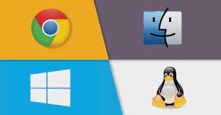
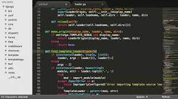
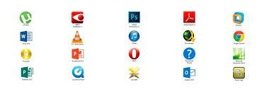
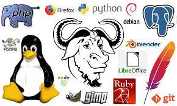

O que é um software?
Software é um conjunto de instruções que devem ser seguidas e executadas por um mecanismo, seja ele um computador ou um aparato eletromecânico. É o termo usado para descrever programas, apps, scripts, macros e instruções de código embarcado diretamente (firmware), de modo a ditar o que uma máquina deve fazer.
Exemplos: Chrome, calculadora, Windows Media Player, Microsoft Word, AutoCAD, Adobe Photoshop.
Sistemas Operacionais
é um software, ou um conjunto de softwares, que tem como papel gerenciar e administrar todos os recursos presentes em um sistema. Isso envolve desde os componentes do hardware e sistemas de arquivos até programas de terceiros. Ao fazer isso, ele garante a interface entre usuário e computador.
Um sistema operacional é fundamentalmente um software, pode ser o Linux, Windows, Android, macOS, UNIX.
Software de Programação
são softwares que permitem que programadores criem outros programas, através do uso de linguagens de programação. Eles fornecem ferramentas e soluções para testar, compartilhar, gerenciar e até de facilitar a escrita dos códigos.
Exemplos: Word, Exel, Paint, Bloco de notas, calculadora.
Software de Sistema
Os softwares de sistema são os responsáveis pelos sistemas operacionais de todos os dispositivos e auxiliam os usuários em seu uso, de forma visual e através de comandos. São extremamente complexos em sua construção
Exemplos: Windows, Android, iOS.
Software de Aplicação
O software de aplicação é criado, em regra, para executar tarefas específicas tal como o processamento de texto, reprodução de áudio. Ao contrário do software de sistema, estas tarefas não são indispensáveis ao normal funcionamento do computador e que só são executa- das a pedido do utilizador.
Exemplos:Exemplos: Chrome, calculadora, Windows Media Player, Microsoft Word, AutoCAD, Adobe Photoshop.
Software Livre
Por “software livre” devemos entender aquele software que respeita a liberdade e senso de comunidade dos usuários. Grosso modo, isso significa que os usuários possuem a liberdade de executar, copiar, distribuir, estudar, mudar e melhorar o software
Entre os exemplos mais comuns, podemos citar o Linux, Firefox, LibreOffice, Audacity e o WordPress.
Software Web ou Web App
O web app é um site responsivo que se comporta como um aplicativo mobile. Nesse caso, ele é executado por meio do próprio navegador, e busca oferecer uma experiência semelhante à aplicação.
Twitter, Pinterest, YouTube , entre outros.
Software de Inteligência Artificial
Os softwares de inteligência artificial, ou software IA, imitam o comportamento humano e os padrões de aprendizado. Um programa de inteligência artificial pode ser utilizado em várias áreas de negócios, desde atendimento ao cliente e vendas (na forma de chatbots) até análise de dados e automação de tarefas de TI.